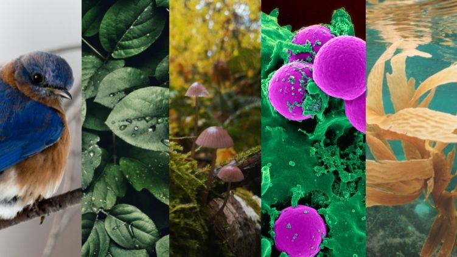

|
¿Te preguntas qué son los reinos de la naturaleza exactamente o se lo quieres explicar a los más pequeños? Para entenderlo de forma sencilla, podemos decir que los reinos en los que se agrupan los seres vivos son un sistema de clasificación taxonómica de la vida que habita en nuestro planeta. Esta clasificación en reinos se basa en unas características comunes y generales de las especies. Esto es debido a que el reino es una clasificación taxonómica mucho más amplia que las familias, géneros o especies, y que incluye una gran diversidad de organismos. |

|
¿Cuáles son los reinos de la naturaleza?
Existen 5 reinos de los seres vivos. A continuación, nombraremos cuáles son los reinos de la naturaleza.
- Reino Vegetal: también conocido como reino Vegetalia o reino Plantae.
- Reino Animal: también conocido como reino Animalia.
- Reino Fungi: comúnmente se le llama el reino de los hongos.
- Reino Monera: podemos encontrarlo nombrado como reino mónera o reino Monera.
- Reino Protista: se le puede llamar también reino Protista.